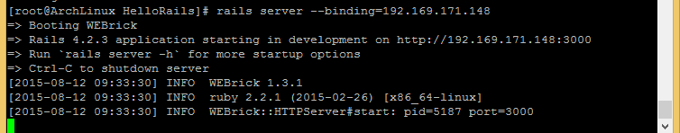
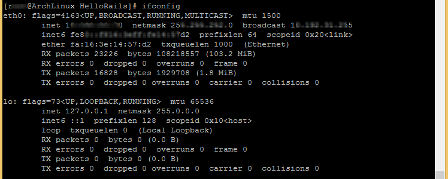

Scale Ruby on Rails Applications across Multiple Servers - Arch Linux, Ruby on Rails, Scaling
Scale Ruby on Rails Applications across Multiple Servers - Arch Linux
Difficulty: 4
Time: 2 hr
In this article, you will see ways to scale the Rails application which is configured with database servers like PostgreSQL and MySQL and then enable the app to distribute the load across multiple Arch Linux servers using Unicorn to handle multiple incoming requests. It is assumed that you have the sudo privileges to perform the steps given in this article
Scalable Application Server Overview
When it comes to building a scalable application server, two key elements are required:
- Application servers - Unicorn or Rails
- Webserver - Nginx
Unicorn is often the preferred choice because of the ease-of-debugging, process management and load balancing capabilities. Nginx is popular because of its light weight web server which will be used as a load-balancer with Unicorn based application for the following example.
Prepare the Sever Build
- Update your Arch Linux server
pacman -Sy
- Install curl
pacman -S curl
Setup the Application Servers
To install Ruby on Rails using RVM, see: Install Ruby on Rails using RVM - Arch Linux
- Install the Unicorn web application
gem install unicorn
- Install node.js
pacman -S nodejs npm
Create a Sample Rails Application
Create a sample application in Rails using the below mentioned commands:
Note: Here we take the current directory of user as the web root.
mkdir /tmp/rails_application
cd /tmp/rails_application
rails new HelloRails
cd HelloRails
# Create a sample resource
rails generate scaffold Task title:string note:text
# Create a sample database
RAILS_ENV=development rake db:migrate
RAILS_ENV=production rake db:migrate
# Create a directory to hold the PID files
mkdir pids
To access it from any public IP, you need to bind it to that public IP
rails server --binding=192.169.171.148
This will boot up the default server on your machine. For this sample environment, WEBrick is the default server, which gets started as shown below:

- It should now be accessible via the web browser.
Now you should be able to access it via web browser:
http://192.169.171.148:3000/tasks
To stop the server, press CTRL+C. Once the server is stopped, it will not be accessible via the web browser.
Install web-application (Unicorn) and Nginx
To start using Unicorn, it must be configured with your environment. There are multiple ways to configure the Unicorn servers. Below are some easy steps to configure the Unicorn server using the vim editor:
- Create a new configuration file unicorn.rb for storing all configuration settings
vim config/unicorn.rb
Place below code in file (simply copy from here, and paste into the file).
# Set the working application directory
# working_directory "/tmp/rails_application/HelloRails"
working_directory "/tmp/rails_application/HelloRails"
# Unicorn PID file location
# pid "/tmp/pids/unicorn.pid"
pid "/tmp/rails_application/HelloRails/pids/unicorn.pid"
# Path to logs
# stderr_path "/tmp/rails_application/HelloRails/log/unicorn.log"
# stdout_path "/tmp/rails_application/HelloRails/log/unicorn.log"
stderr_path "/tmp/rails_application/HelloRails/log/unicorn.log"
stdout_path "/tmp/rails_application/HelloRails/log/unicorn.log"
# Number of processes
# Rule of thumb: 2x per CPU core available
# worker_processes 4
worker_processes 5
# Time-out
timeout 20
Save and Exit the Vim editor by pressing Esc and pressing ":wq".
- Run the following to start Unicorn in daemon mode using the configuration file
unicorn_rails -c /tmp/rails_application/HelloRails/config/unicorn.rb -D
Setup Nginx as Reverse-Proxy and Load-Balancer
- Install Nginx
pacman -S nginx
- Take a note of the public IP address using ipconfig command
Before configuring Nginx server, you need to keep a note of the public IP address of your droplet. For this, ifconfig command can be used.
ifconfig

The value provided under the head inet addr is the public IP address of your droplet.
- Open the Nginx configuration file
vim /etc/nginx/nginx.conf
Inside the block http {...}, insert the following code:
# Set your server
# server_name www.example.com;
upstream unicorn_servers {
# Add a list of your application servers
# Each server defined on its own line
# Example:
# server IP.ADDR:PORT fail_timeout=0;
server 10.192.28.70:8080 fail_timeout=0;
}
server {
# Port to listen on
listen 80;
location / {
# Set proxy headers
proxy_set_header Host $host;
proxy_set_header X-Real-IP $remote_addr;
proxy_set_header X-Forwarded-For $proxy_add_x_forwarded_for;
proxy_pass http://unicorn_servers;
}
}Save and Exit the Vim editor by pressing Esc and pressing ":wq".
- To get started, run the Nginx daemon by typing the below command:
systemctl start nginx
To check the Nginx server, you can type in the public IP address directly into the web browser:
http://192.169.171.148/
The welcome message by Nginx should be visible:

Conclusion
Using the above procedure, you can build a scalable application server using Unicorn or Rails applications server and Nginx webserver. This would enable any critical app (like PostgreSQL and MySQL) to distribute the load across multiple servers to handle multiple incoming requests.